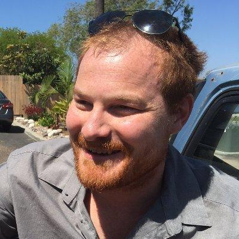
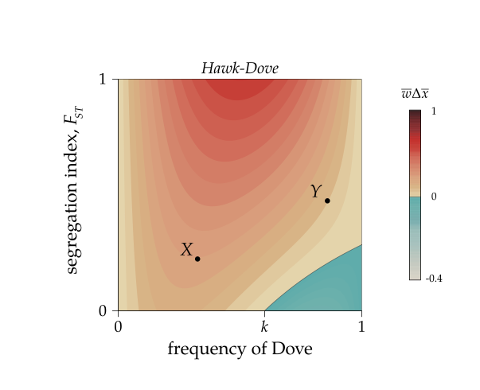
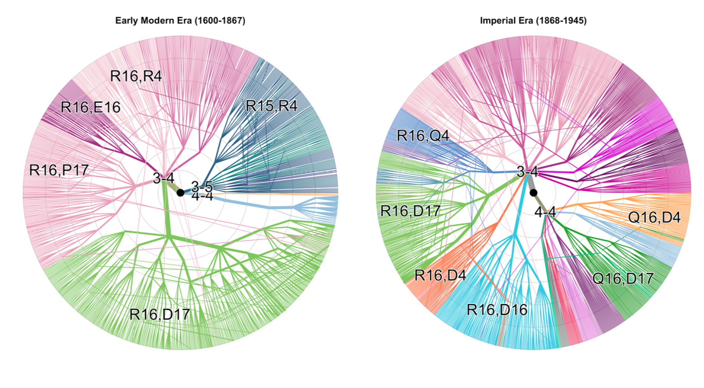
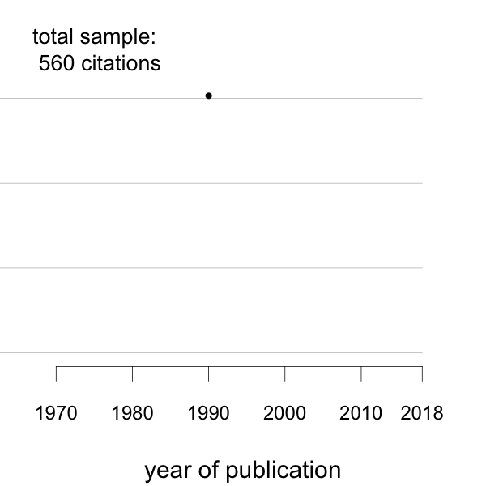
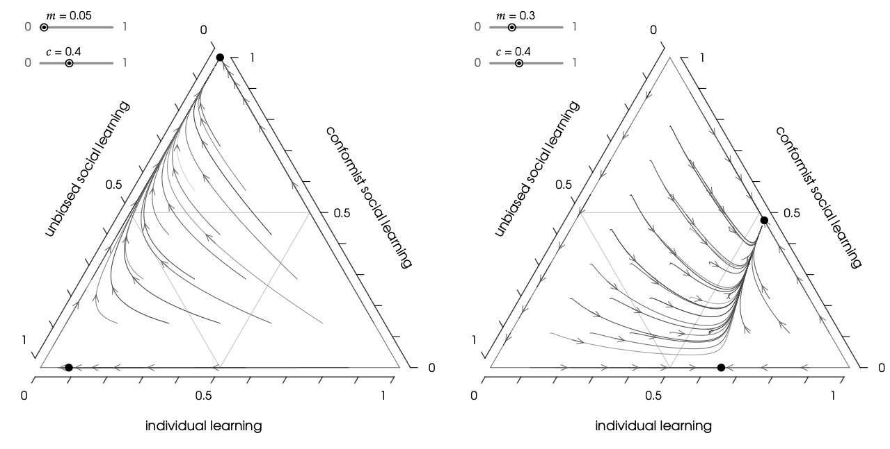
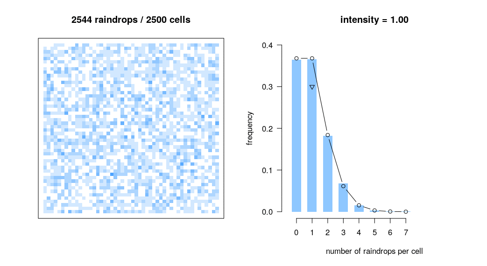

Bret Beheim

Group Leader, MOSAIC (Models of Sociality, Art, Information and Culture) Research Group
Department of Human Behavior, Ecology, and Culture
Max Planck Institute for Evolutionary Anthropology, Leipzig
I study cultural evolution: how information, behavior, technologies, and institutions spread, persist, and change in human populations. My work combines mathematical models with large-scale behavioral and historical datasets, longitudinal field research, and computational methods. I am particularly interested in the intersection of social learning and demographic change, and the ways population structure shapes cultural dynamics.
A second strand of my work concerns the infrastructure of empirical science itself. I develop tools and workflows for longitudinal databases, data provenance, reproducible analysis, and open scientific computing, drawing heavily on experience in long-running collaborative field projects.
I received my Ph.D. in Ecology from the University of California, Davis, and have been at the Max Planck Institute for Evolutionary Anthropology since 2016. I have led the MOSAIC Research Group since 2020.
Curriculum vitae · Google Scholar · ORCID · GitHub · Email
Research
My research focuses on how individual learning decisions scale up to population-level patterns of cultural diversity and change. Across theoretical and empirical projects, I try to connect mechanisms of learning and innovation to the demographic, ecological, and social processes that determine which information people encounter, which alternatives they choose, and which cultural variants survive through time.
Mathematical models of cultural evolution
My current theoretical work focuses on the interaction between learning strategies, demographic turnover, population structure, and environmental change. These processes can alter both the value of social information and the population-level consequences of individual learning rules. This relies heavily on formal models of cultural change, so that assumptions can be compared across models and connected to quantities that can be estimated from empirical data.
In particular, I am focused on decomposing cultural change into distinct evolutionary forces, analyzing the relationship between cultural differentiation and group-beneficial outcomes, and modeling the cultural transmission of behavior across the life course. This also provides the basis for my current book with Paul Smaldino, Mathematical Foundations of Cultural Evolution.

Representative work includes Does literature evolve one funeral at a time?, Why cultural distance can promote – or impede – group-beneficial outcomes, and The development of risk behaviors and their cultural transmission.
Empirical cultural dynamics and human ecology
I use longitudinal and historical datasets to study cultural change at scales ranging from individual learning to population-wide diffusion. One long-running example is the East Asian board game Go, where records of professional play make it possible to observe strategic social learning and the turnover of specific cultural variants over centuries, including the transition into the era of superhuman artificial intelligence. The data and analysis for my recent work on this transition are openly available in the go-learning-eras repository, while the kaya R package provides reusable tools for parsing and analyzing Go game records.

Related projects have examined the structure of Tamil kolam art, residential mobility in historical populations, the turnover of literary forms, and the effects of cultural and social structure on cooperation and inequality.
Since 2012, I have also worked with the Tsimane Health and Life History Project in Bolivia. This collaboration focuses on market integration, mobility, social networks, health, demography, and the diffusion of technologies and practices in a rapidly changing small-scale society. As part of this project, I have made important contributions to empirical research on cooperation, cardiovascular health, infectious disease, aging, wealth, reproduction, and demographic change.
Data provenance, research infrastructure, and open science
Large longitudinal datasets make it possible to address questions that cannot be studied with small cross-sectional samples, but they also face novel problems of data provenance, documentation, quality control, and reproducibility. In addition to my primary focus as a researcher, I develop research infrastructure intended to make complex field data easier to audit, maintain, reuse, and analyze.
I have been the primary database creator and maintainer for the Tsimane Health and Life History Project since 2012, and have contributed to database systems and data-management workflows for collaborative field projects across multiple field sites. This work has also motivated empirical research on reproducibility in the social-learning literature and a collection of open-source R tools for scientific computing.

Representative work includes Estimating the reproducibility of social learning research published between 1955 and 2018, The Tsimane Health and Life History Project: Integrating anthropology and biomedicine, and Reproducible Research as our New Default. A large-scale example of this approach is the reanalysis repository for our Nature Matters Arising on the rise of moralizing religious beliefs in world history.
Book
Mathematical Foundations of Cultural Evolution
Bret A. Beheim and Paul E. Smaldino
Under contract with Princeton University Press · manuscript due December 2026

Modeling the evolution of social learning strategies.We are writing a book-length introduction to the mathematical foundations of cultural evolution. Starting from first principles, the book derives, step by step, the key formal models for how socially transmitted information changes in populations and connects those models to the broader logic of evolutionary, ecological, and demographic processes. Our aim is to make the mathematical structure of cultural-evolution models transparent and up-to-date for contemporary researchers, as well as highlight different assumptions in the literature about cognition, learning, population structure, demography, and environmental change.
Publications
A selection of recent and representative work is below. Also available is my complete publication list, my CV and Google Scholar profile.
-
Pérez Velilla, A., Beheim, B., & Smaldino, P.E. (2025). The development of risk behaviors and their cultural transmission. Psychological Review.
-
Beheim, B. (2025). Opening strategies in the Game of Go from feudalism to superhuman AI. Evolutionary Human Sciences, 7(e28). Data and code.
-
Sobchuk, O., & Beheim, B. (2025). Does literature evolve one funeral at a time?. Proceedings of the Royal Society B, 292, 20242033. Materials.
-
Martin, J.S., Beheim, B., Gurven, M., et al. (2025). Indirect genetic effects among neighbors promote cooperation and accelerate adaptation in a small-scale human society. Science Advances, 11, eads3129. Data and code.
-
Ready, E., Ross, C.T., Beheim, B., & Parrott, J. (2024). Indigenous food production in a carbon economy. Proceedings of the National Academy of Sciences, 121, e2317686121. Data and code.
-
Beheim, B., & Bell, A.V. (2024). Why cultural distance can promote – or impede – group-beneficial outcomes. Evolutionary Human Sciences, 6(e14). Data and code.
-
Fedorova, N., McElreath, R., & Beheim, B. (2022). The complex life course of mobility: Quantitative description of 300,000 residential moves in 1850–1950 Netherlands. Evolutionary Human Sciences, 4, E39. Data and code.
-
Minocher, R., Atmaca, S., Bavero, C., McElreath, R., & Beheim, B. (2021). Estimating the reproducibility of social learning research published between 1955 and 2018. Royal Society Open Science, 8, 210450. Data and code.
-
Beheim, B., Atkinson, Q., Bulbulia, J., et al. (2021). Treatment of missing data determined conclusions regarding moralizing gods. Nature, 595, E29–E34. Data and code.
-
Kaplan, H., Thompson, R.C., Trumble, B.C., et al. (2017). Coronary atherosclerosis in indigenous South American Tsimane: a cross-sectional cohort study. The Lancet, 389, 1730–1739.
-
Beheim, B., Thigpen, C., & McElreath, R. (2014). Strategic social learning and the population dynamics of human behavior: the game of Go. Evolution and Human Behavior, 35, 351–357. Data and code.
Group
I supervise students and postdoctoral researchers through the Department of Human Behavior, Ecology, and Culture at MPI-EVA. My mentoring has centered on cultural evolution, information diffusion, longitudinal data analysis, and reproducible research.
Research Team
- Peeter Tinits, postdoctoral researcher
- Oleg Sobchuk, postdoctoral researcher; now Independent Group Leader, Max Planck Institute for Empirical Aesthetics
- Daniel Redhead, postdoctoral researcher; now Assistant Professor at the University of Groningen
- Natalia Fedorova, doctoral researcher; now Assistant Professor at Aarhus University
- Riana Minocher, doctoral researcher; now Research Fellow at the Berlin Institute of Health at Charité
- N.-Han Tran, doctoral researcher; now Head of Unit, Microcensus Analysis, at the Federal Statistical Office of Germany
- Anja Becker, B.A. and M.Sc. theses, Leipzig University
- Leonie Ette, M.A. thesis, Leipzig University
I also coordinate and contribute to research infrastructure for collaborative field projects through the department’s data-provenance work, and have directly supervised a team of 18 research assistants in Leipzig and 12 in Bolivia.
Teaching
My teaching focuses on scientific computing, quantitative methods, human behavioral ecology, and cultural evolution.
Scientific Computing in Evolutionary Anthropology
Since 2019 I have taught an annual course on scientific computing at MPI-EVA, with an emphasis on reproducible workflows, version control, data organization, automation, testing, and transparent analysis drawing on the Software Carpentry curriculum.
Previous courses
As the primary instructor, I have developed and taught a number of courses over the years on cultural evolution, behavioral and cultural ecology, human evolution, statistics, applied probability theory, and research methods.

Demonstration of the Poisson scatter theorem.
- The Human Life Course, University of New Mexico, 2013–2015
- Research Computing in Evolutionary Anthropology, University of New Mexico, 2014 (co-led with Jeff Long)
- Workshop on Statistical Rethinking, University of New Mexico, 2016
- Evolution and Human Nature, University of California, Davis, 2011
- Applied Research Methods, University of California, Davis, 2011–2012
- Cultural Ecology, University of California, Davis, 2010 (co-led with Ben Orlove)
Software
I develop reusable research software and publish the code and materials behind almost all of my empirical work. My goal is not only to build infrastructure that can be reused across studies, but also to make any specific analysis reproducible.
Research software
- longformer — tools for managing longitudinal relational research databases in R; used to manage the Tsimane Health and Life History Project Research Database
- kaya — tools for parsing, validating, transforming, and analyzing Go games stored in SGF format
- yamltools — tools for parsing YAML-structured plaintext interview data
- yamlform — a plaintext interview format for producing XLSForm documents for ODK-based data collection
- SIMani — agent-based simulation of demographically realistic human populations
Selected reproducible research
- go-learning-eras — data and analysis code for Opening strategies in the Game of Go from feudalism to superhuman AI
- causality-variance-fst — models, analysis, and figure-generation code for Why cultural distance can promote – or impede – group-beneficial outcomes
- moralizing-gods-reanalysis — the reproducible computational archive for our Nature reanalysis of missing data and moralizing-gods claims
I also build smaller tools and visualizations for communicating research methods, including citation-gates, which visualizes how cited results pass through successive reproducibility checks.